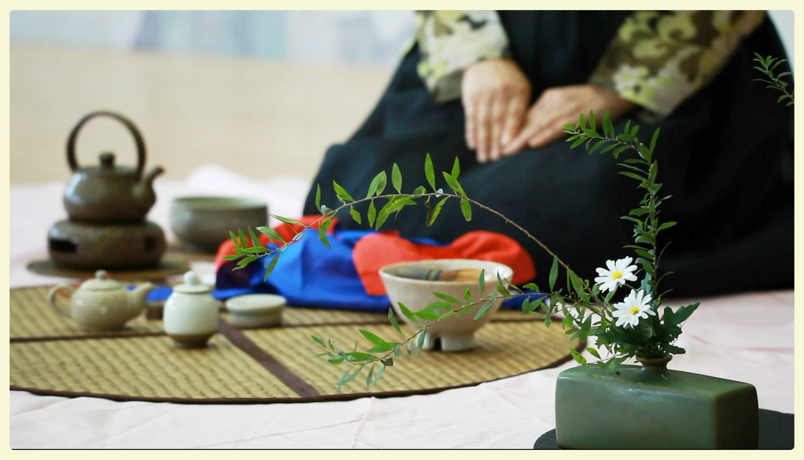

中国国际茶包装设计博览会
打造全球最高端的茶产业采购平台
中国厦门国际茶业展览会于2010年创办， 2012年升格为中国厦门国际茶产业博览会（以下简称“厦门茶博会”），历经6年的成长，厦门茶博会得到了长足发展。2016中国厦门国际茶产业博览会将于2016年10月20-24日（五天）在厦门国际会展中心隆重举办！本届茶博会展览面积将达60，000㎡，设置国际标准展位3000个，并规划品牌茶企展区、精品茶具展区、包装设计展、国际展区以及台湾展区五大特设展区，从全球视角展示茶全产业链盛况！
厦门茶博会一直秉承 “高规格、国际性、专业化” 的办展理念，以“对台贸易、产业联动、辐射全球”为宗旨，从协会合作、媒体广告、实地招商等途径多渠道扩大招商力度，努力为展客商搭建更实效的商贸平台。随着展会知名度不断跃升，影响力持续增强，厦门茶博会已成为涵盖全产业链最齐全的信息交流、展示交易的顶级品牌盛会！
>>2016展会五大亮点
搭建国际平台提升品牌效益
厦门茶博会组委会与斯里兰卡、印度、马来西亚、尼泊尔、印度尼西亚、肯尼亚、韩国、日本等重要产茶区的政府机构、行业协会、龙头企业等建立了良好密切的合作伙伴关系，在招展招商方面紧密配合。展会专设国际展区，境外参展企业的数量、专业性都处于国内领先地位，国际展商和客商突破性增长，目前已成为境内外参展商倚仗的重要的进出口贸易平台。
凸显台湾特色，促进两岸交流
台湾与厦门地缘相近、商缘相连，也是海内外知名的茶叶产区。6000㎡的台湾展区将呈现文山包种、木栅铁观音、东方美人、冻顶乌龙、高山乌龙、日月潭红玉等众多优质茶品；莺歌陶瓷、特色柴烧等茶器佳品以及精彩的茶席表演，浓郁的茶文化理念；厦门茶博会作为台湾茶产业最大的展示平台，吸引着来自全球的广大客商前来感观体验，不仅为台湾茶企开拓国际市场提供了良好的商贸平台，也进一步增进了海峡两岸茶文化交流。
品类齐全构建世界一流茶器贸易平台
组委会全方位挖掘优质企业的特色茶器具产品参展，助推企业拓展境内外茶器具市场。无论是河南钧窑、汝窑，河北定窑、景德镇陶瓷、台湾莺歌陶瓷、柴烧、德化陶瓷、潮州陶瓷，还是广西坭兴陶、宜兴紫砂、云南建水紫陶；或是日本、韩国的优质茶器，还是漆器、石制、竹制等其他品类，在厦门茶博会上都能找到青睐的专业客商，拓展销售渠道。同期将继续举办国际茶器论坛，在更大范围内提升参展效益，打造茶器行业内有口皆碑的全球一流的茶器具贸易平台。
品牌荟萃彰显包装设计专业平台
本届展会将规划15000㎡作为茶叶包装设计展，集中展示木盒包装、锡器包装、金属罐包装、纸盒包装、竹木包装、复合薄膜袋包装、纸袋包装、包装面料、包装机械等多元化包装产品。组委会依托厦门茶包装的产业优势，努力搭建茶包装生产商、茶企、茶包装销售商之间的零距离接触平台，在交易、交流、交友的同时，达到资源共享、产销见面、优势互补、合作共赢。同期还将举办国际茶包装设计论坛，以会促展，进一步彰显交易、交流、专业的平台优势。
多元活动助推茶产业转型升级
组委会紧握茶文化脉络，将在去年的基础上，打造更专业、信息量更大、更富文化内涵与底蕴的一系列活动。2016世界茶商大会、国际茶包装设计论坛、国际茶艺表演等活动将为茶企了解茶叶、茶器、茶包装等茶行业全产业链的最新资讯以及拓展境内外市场构建专业性的贸易交流平台。活动与展会交相辉映，全面助力茶产业转型升级。
>>2015精彩回顾
2015厦门茶博会展览面积达60,000平方米，来自15个国家和地区逾千家企业展出。据统计，厦门茶博会客商达到253,358人次，其中来自美国、加拿大、德国、英国、瑞士、澳大利亚、日韩、新加坡、马来西亚、泰国、印度、斯里兰卡、尼泊尔等超过50个国家和地区的境外客商70,857人次。客商总数比去年增长30%，满意度高达99.8%。同期举办的世界茶商大会、国际包装设计论坛、国际茶器论坛、国际茶艺茶道表演等活动都获得了境内外展客商的一致好评。
厦门会展金泓信展览有限公司（厦门国际茶博会组委会）
地 址：厦门市思明区会展路198号厦门国际会展中心
电 话：86-592-5959888 / 669
传 真：86-592-5959611
邮 箱：info@teafair.com.cn / xm@teafair.com.cn